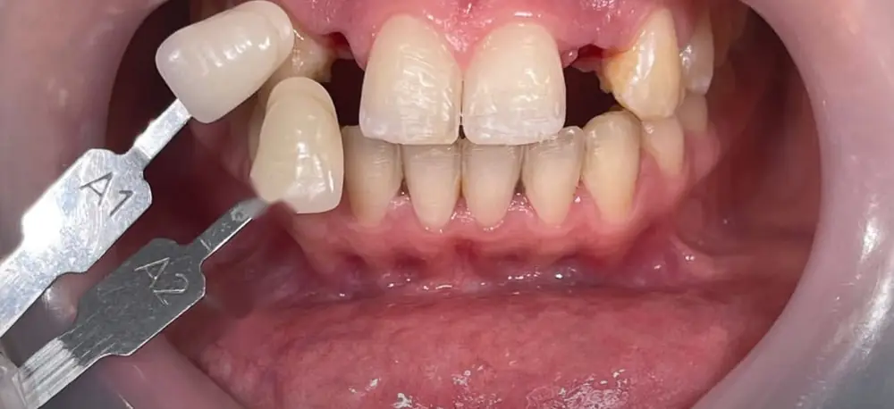
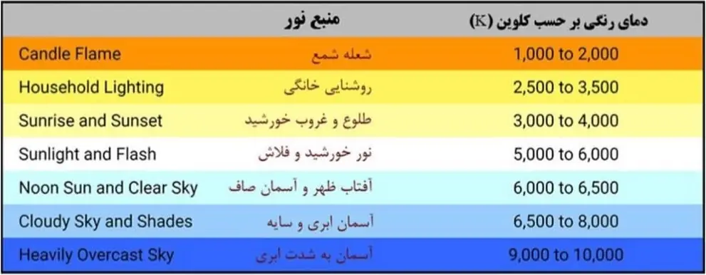
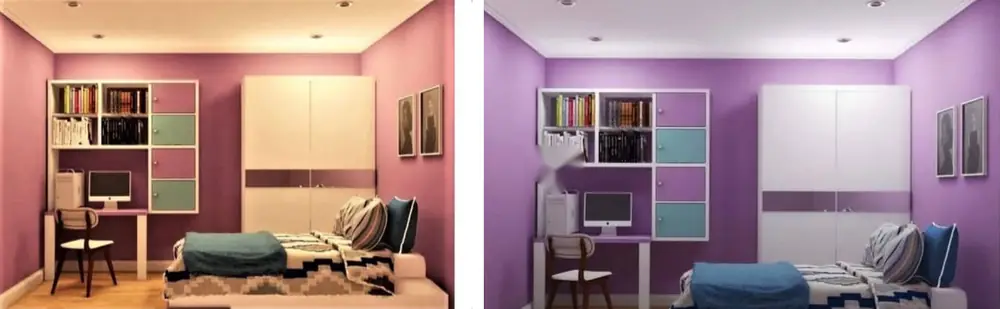
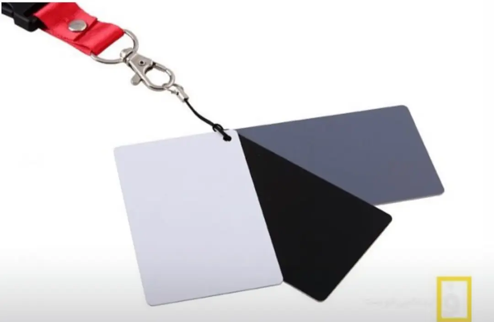
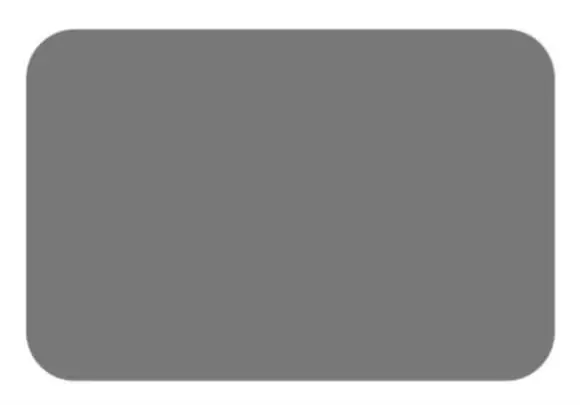
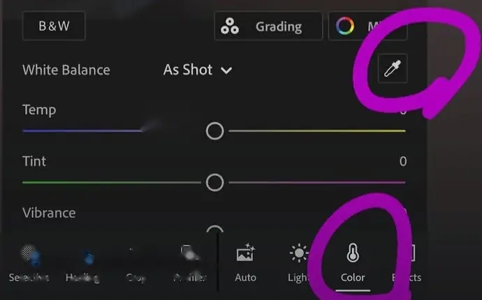

A Guide to Tooth Shade Selection: How to Get the Shade to the Lab Correctly
Once you have picked the tooth's shade with a shade guide, shade selection is not finished yet. The lab technician never sees the patient. If you only write "A2", the technician knows only the base shade. They don't know whether the patient's tooth is slightly lighter or darker than that tab, whether its incisal edge is translucent, or whether it has stains and fine cracks that should be reproduced in the crown. The only way the technician can see the tooth the way you saw it is a photo. That is why, after selecting the shade, you should photograph the tooth and send the photo to the lab with the case.
The problem is that a photo does not always show the real colour. The room light, the camera settings and even the screen the technician views the photo on can all change the colour. Below I first describe the simplest method, which reduces this problem considerably, and then explain what else is needed for more demanding cases.
∆ The simplest method: a photo with the shade tab beside the tooth
After selecting the shade, hold that same shade tab beside the tooth and photograph both together. Two points matter when taking the photo:
- Same plane. The tab and the tooth should be in the same plane. If the tab sits in front of the tooth, it catches more light and looks lighter.
- Aligned edges. Place the tab edge to edge with the tooth. That way both have the same angle to the camera and receive the light the same way.

Why does this method work? Because the technician has the same shade tab in the lab. If the clinic light or the camera has shifted the photo's colour a little, that shift has affected both the tooth and the tab beside it. So the technician does not rely on the absolute colour in the photo; they look at the difference between the tooth and the tab. For example, they see that the tooth is slightly darker than the tab or that its edge is more translucent, and then reproduce that same difference on their own physical shade tab. The technician who works with me has, over the years, also become used to taking the tab in the photo as the reference.
This method is enough for everyday work, such as a posterior crown or an anterior tooth in a simple situation. But it has limits. For complex esthetic work, for example when a single anterior tooth has to match the neighbouring tooth exactly, you need more, which I describe below.
∆ Why does the colour in a photo differ from the real colour?
The main reason is light. The colour we see in an object is the light that comes back from it. So if the light itself is not pure white, if it is slightly yellow or blue, or lacks some colours altogether, the object's colour is not seen correctly either. Two properties of light matter here.
Colour temperature
Light from different sources is not the same colour. Some light leans towards yellow, like ordinary household bulbs, and some leans towards blue, like the light of an overcast sky. This property is expressed as a number called colour temperature, in kelvin. A lower number means yellower light, and a higher number means bluer light.

In practice, this means that if you take the photo under the room's yellow light, the tooth looks yellower than it really is. Clinic light is also usually a mix of several sources with different temperatures: the window, the ceiling lamp and the unit light. For a shade photo, it is better to have light close to daylight, around 5500 to 6000 kelvin.
CRI
The second property is how complete the light is. Sunlight contains every colour of the spectrum, but some lamps are missing part of it. If, for example, part of the green spectrum is missing from the light, green objects do not show their real colour. The number that expresses this property is called CRI (Color Rendering Index), and its maximum is 100. The closer it is to 100, the more realistically the light shows colours.
When buying photography light or a clinic lamp, the CRI is usually listed in the product specifications. For example, the manufacturer of the light I use for photography states its CRI as up to 98. CRI affects both what your eye sees while selecting the shade and what the camera records.
If you don't have suitable light
If corrected light is not available, two things help:
- Select the shade and take the photo in light close to daylight (around 5600 kelvin).
- In addition to the colour photo, send a black-and-white version of the same photo to the lab.
A black-and-white photo removes the colour and shows only how light or dark the tooth is, which is called value. In shade matching, value is one of the most important factors, and it is much easier to compare in a black-and-white photo. On that same photo you can also zoom in and mark the areas with translucency or stains with a coloured pen so the technician can see them.
∆ White balance: removing the light's extra tint from the photo
Even when the light is not ideal, the yellowness or blueness of the light can be removed from the photo. This setting is called white balance. The camera or the software detects which way the light was leaning, for example yellow or blue, and neutralises it so the colours look natural.

Phone cameras and ordinary cameras set white balance automatically, but this automatic setting is not always accurate. There is also one point you should know: white balance only corrects the overall yellowness or blueness of the light. If the light is incomplete (low CRI), the colours that were missing from the light do not come back with white balance. So good light has no substitute.
∆ Gray card: a reference for accurate white balance
For white balance to be set accurately, the camera or software needs a reference, that is, something whose real colour we are sure of. That reference is the gray card: a standard gray card that is completely neutral in colour and reflects no colour more than the others. You can buy a gray card from photography supply shops.

The logic is simple. Because we know the card's real colour is pure gray, if it looks slightly yellow or blue in the photo, that yellow or blue comes from the light. The software removes exactly that from the whole photo, and the tooth and the shade tab also move closer to their real colours. Some gray cards are labelled 18 percent reflectance, which relates mostly to exposure. For white balance, what matters is that the card's colour is neutral.

There are two ways to use a gray card:
- Before taking photos (in a professional camera): In the same light you want to shoot in, take a photo of the gray card. Then, in the camera settings, choose custom white balance and give it that photo as the reference. From then on, the camera takes every photo with this reference.
- After taking photos (in software): Put the gray card inside the photo itself. The simplest way is to have a small piece of gray card, the size of a shade tab, beside the tab and the tooth. Later, in the software, you set white balance based on it. This method can be done with a phone too.
∆ Correcting white balance in software
Lightroom mobile. The Lightroom app is free and installs on any phone. If the gray card is in the photo:
- Open the photo in the Lightroom app and go to the Color section from the bottom bar.
- Next to the White Balance option there is an eyedropper icon; tap it.
- Move the marker that appears onto the gray card in the photo. The software sets the white balance of the whole photo based on the gray card.

Photoshop (Camera Raw). If you took several photos in the same light with a professional camera and only one of them has the gray card, you don't need to correct them one by one:
- Open all the photos together in Camera Raw and press Select All.
- Select the photo that has the gray card.
- Click on the gray card with the White Balance eyedropper. The white balance of all the photos is corrected together.
∆ The method I use
The full method, meaning corrected light, a professional camera, a gray card and correction in Photoshop on a laptop, gives the most accurate result, but it is slow and heavy for everyday work. That is why I use a simpler version. For routine cases, a phone photo with the shade tab beside the tooth is enough. For cases that need more accuracy, I also place a gray card beside the tab and correct the white balance in the Lightroom app on my phone. And for complex esthetic restorations, the full method has no substitute.